Overview
In this project, as per CS 184 guidelines, I have implemented an engine that can render SVG files. In particular, supported SVG specifications in this
implementation include points, lines, textured triangles, homogenous transforms, and more. Via a GUI, the user can switch between sampling methods. Therefore,
Mipmaps, linear interpolation, and even tri-linear interpolation are supported.
Section I: Rasterization
Part 1: Rasterizing single-color triangles
For the naive triangle rasterization algorithm, we simply loop through each pixel in the bounding box determined by a triangle's vertices.
Using three linear equations, we check if a given pixel is inside all three sides of the triangle. In practice, this implementation was done
by creating a custom struct, "BaryTriangle" for each triangle, which reduced the number of calculations needed to render a given triangle.
Part 2: Antialiasing triangles
Supersampling, e.g. sampling a given pixel at multiple locations, can smooth harsh edges to create a blurring effect. In general, this reduces
aliasing. We implement this in the advised way, which was to sample the given image at an upscaled resolution and then to filter this
upscaled vector down. In practice, supersampling in this way uses excess in memory in proportion to our supersampling factor, however is fairly
computationally efficient as only a single pass on the image is needed in the downsample.
All changes made were as detailed in the specs; in particular,
sample_buffer of the upscaled image was kept, which was later reduced to the
frame_buffer. Here are some example photos:
|
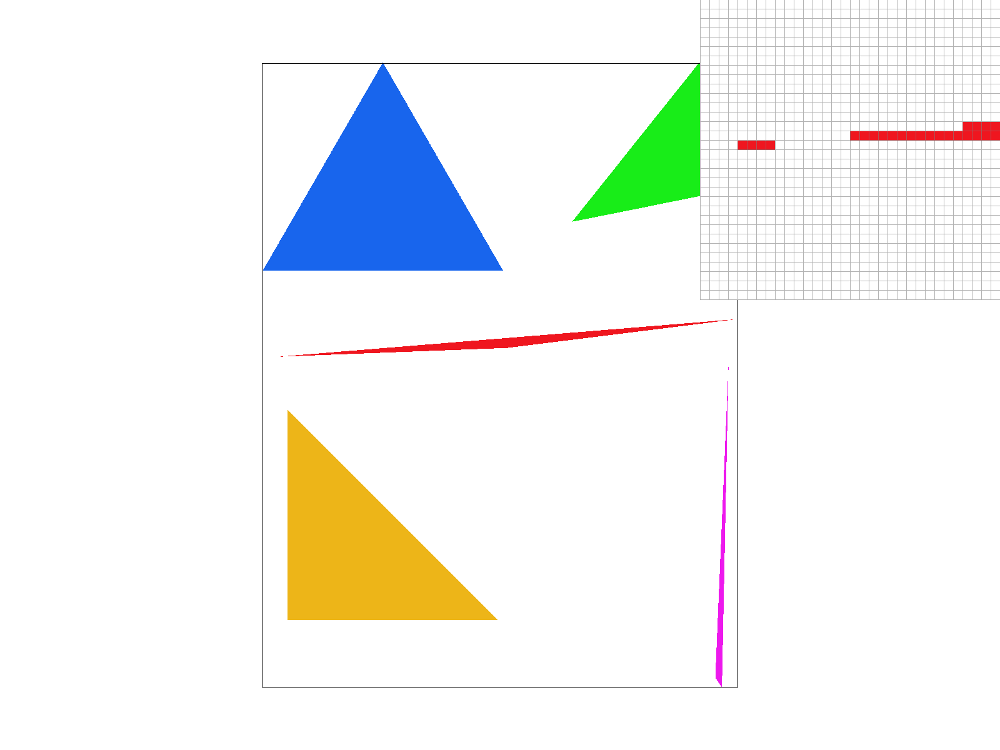
No supersampling: alias artifacts.
|
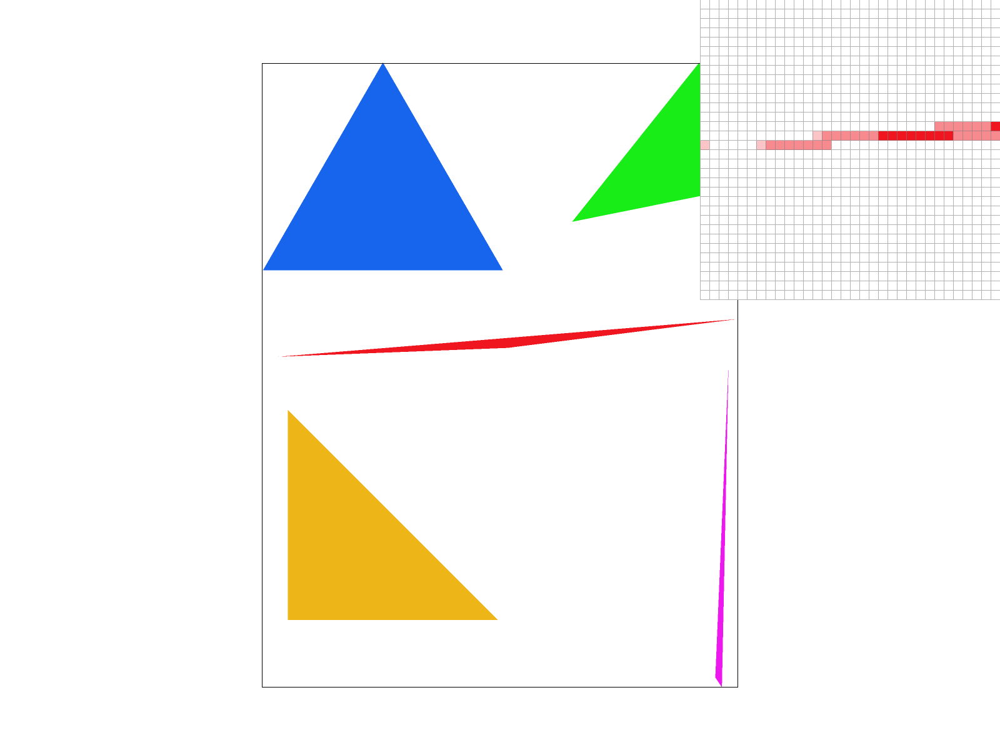
Sample rate of 4.
|
|
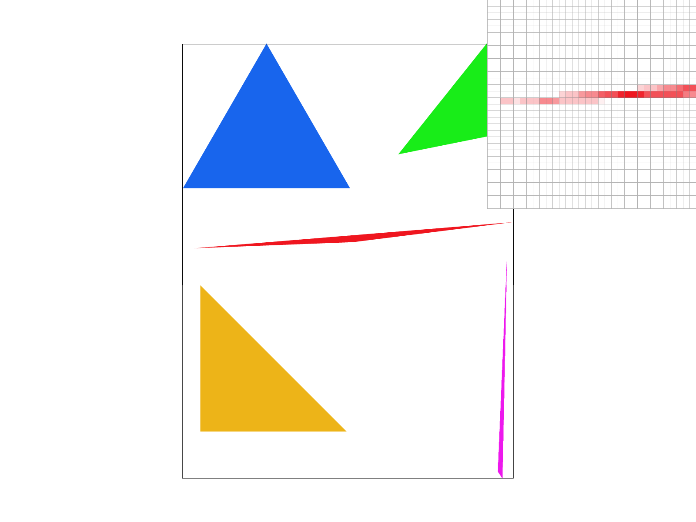
Sample rate of 16.
|
Part 3: Transforms
Homogenous transformations using 3x3 matrices was also implemented. As an example, here is a little robot made with basic
primitives and transformations. The robot is made to look as if he is walking, with opposite arms and legs extended
toward the camera:
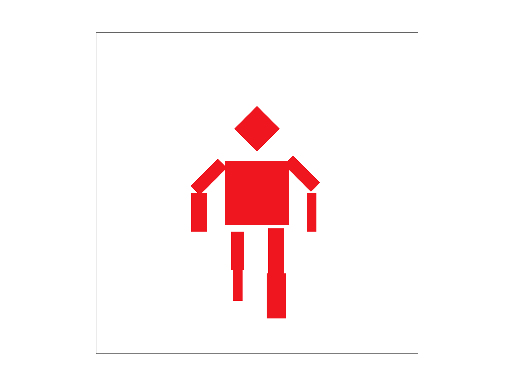
Section II: Sampling
Part 4: Barycentric coordinates
Barycentric is simply expressing any point in a plane relative to the coordinates of a triangle. Here is an image I found
online:
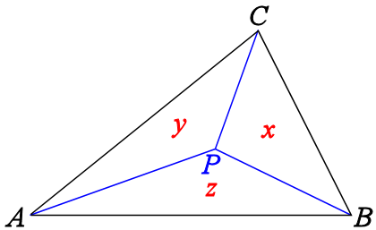
credit to girlsangle.wordpress.com
Here is the render of an svg with a triangle smoothly interpolating between three colors using barycentric coordinates:
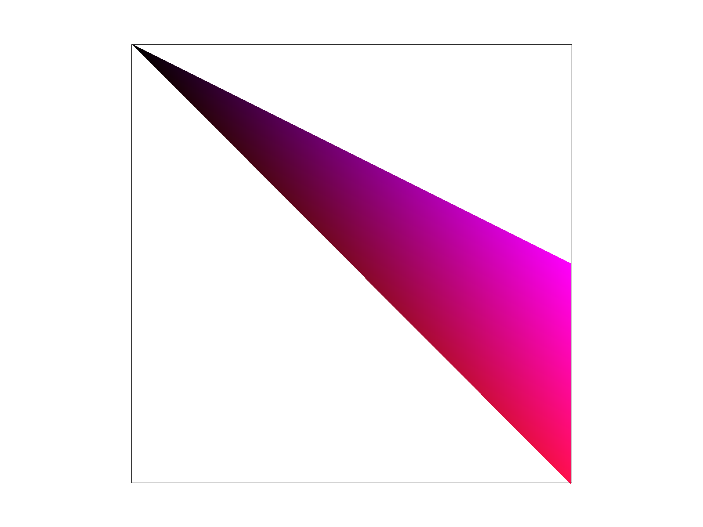
Part 5: "Pixel sampling" for texture mapping
We need some way to texture an object using a png. We do this by sampling the png. We can do this naively, by trying to map
a given pixel to its closest neighbor in the png, or we can interpolate a bunch (4) neighbors. Here's examples!
|
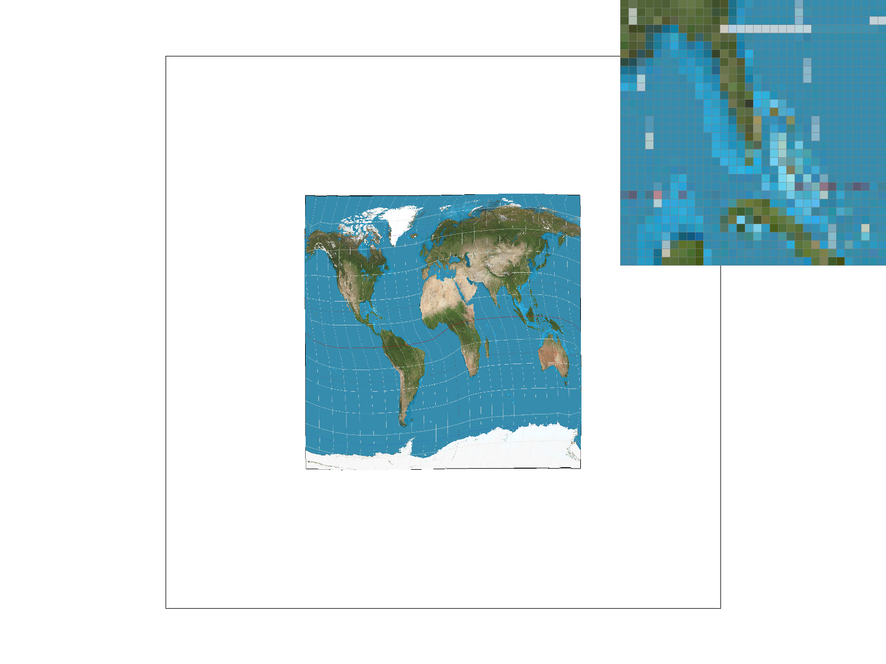
Nearest sampling at 1 sample
|
Nearest sampling at 16 samples per pixel
|
|
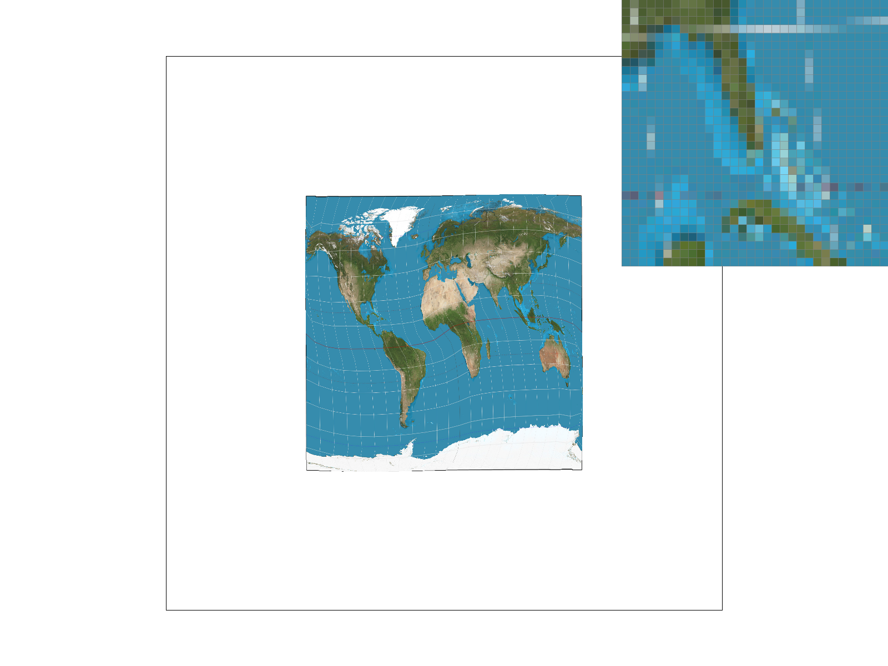
Bilinear at 1
|
Bilinear at 16
|
Part 6: "Level sampling" with mipmaps for texture mapping
For implementation of mipmapping, which is a way to alleviate anti aliasing for texture mapping,
we need to pick a "level" parameter for each pixel. Using the methods described in class, we have the following
results:
|
Always zero layer with bilinear sampling
|
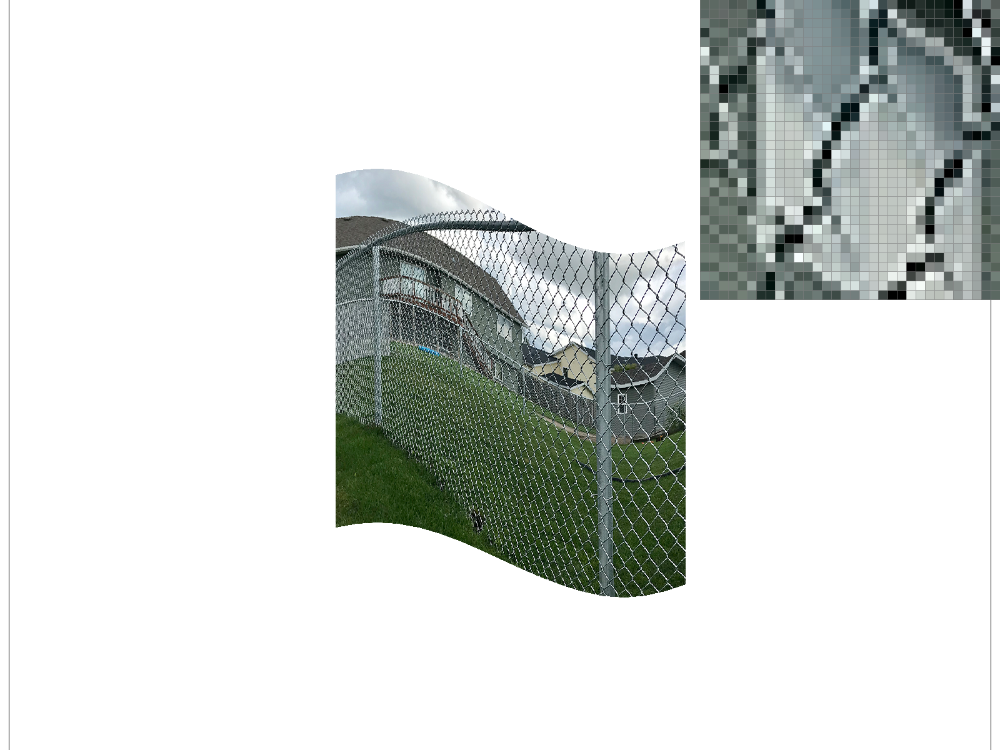
Always zero layer with nearest sampling
|
|
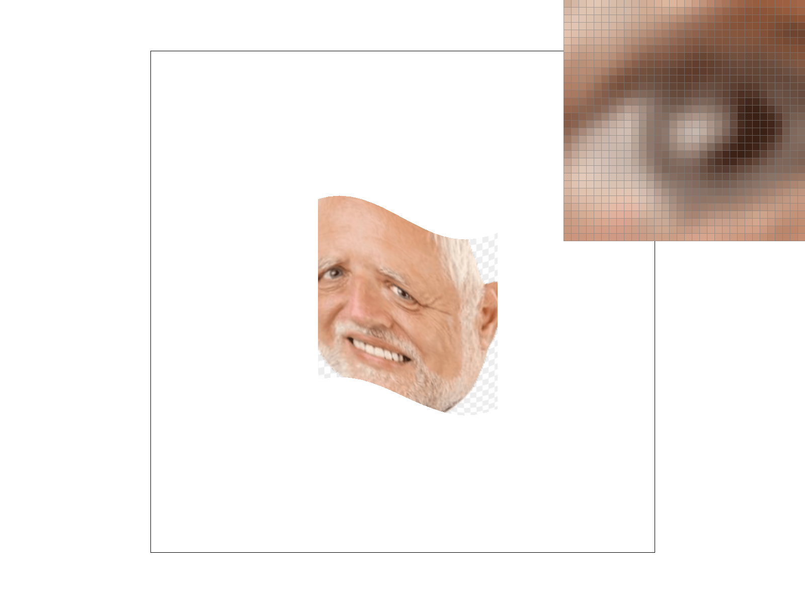
Nearest layer with linear sampling
|
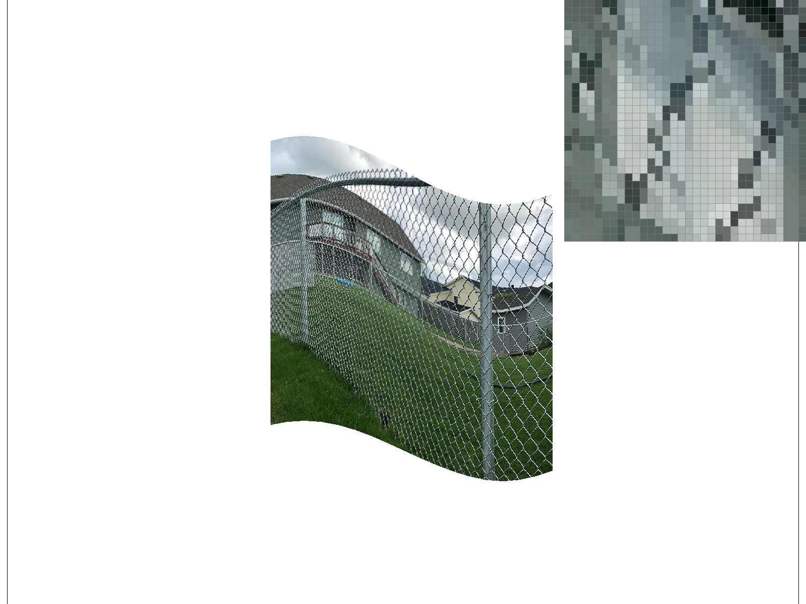
Nearest layer with nearest sampling
|